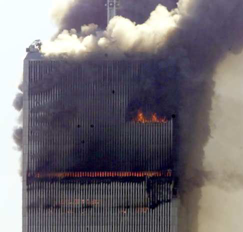
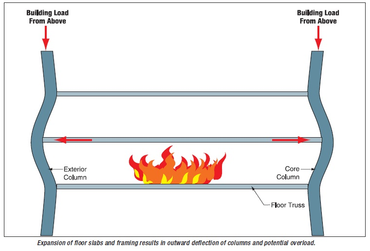
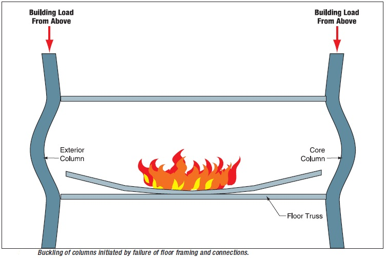

Video Sources
The Tower Tip Collapsing
A short segment to highlight the theory of the internal core collapse
Catenary Action
A video recording of an experiment researching the effects of a catenary action on a beam
The Structural Collapse of the World Trade Center
A structural analysis of the World Trade Center (WTC) towers shows that a collapse was inevitable once the aircrafts impact occurred. It was only a redundancy in design that allowed the tower to remain standing for an additional 1 hour and 43 minutes. The collapse itself occurred due to a multitude of different structural failures, but it was the buckling of the core that finally caused the tower to collapse.
The structures reaction to the initial impact was impressive. "Following the impact, floor loads originally supported by the exterior columns in compression were successfully transferred to other load paths" (FEMA 2-16). This transfer of loads was made possible by the redundancy built into the WTC, the major components in the structural system were "composed of the exterior load-bearing frame, the gravity load-bearing frame at the central core, and the system of deep outrigger trusses in upper stories" (FEMA 2-16). Ultimately, when the floors collapsed losing their support from the exterior walls, and when a number of exterior columns collapsed "the structure was able to successfully redistribute the building weight to the remaining elements and to maintain a stable condition" (FEMA 2-21). This redistribution of the loadings was made possible because the remaining exterior columns had "substantial over-strength for gravity loads" (FEMA 2-20). The largest piece of evidence proving that the structure of the WTC was capable of redistributing all of those loads as well as support the excess weight brought in by the plane was the fact that it was able to remain standing "for 1 hour and 43 minutes following the impact" (FEMA 2-21). From an engineering perspective, the "impact damage to the core structure had a negligible effect on the critical thermal load required to initiate collapse in the core structure" (Irfanoglu and Hoffmann 66), therefore a further study of the fire damage in the WTC needs to be made.
During the investigation in the collapse of the towers it was "estimated that a core collapse mechanism could have been initiated in WTC-I if the tower-core column temperatures were elevated to approximately 700°C" (Irfanoglu and Hoffmann 66). This estimation could be a good explanation as to why the tower eventually collapsed and therefore should be investigated further. It has been scientifically proven "that steel begins to soften at around 500°C" ("Twin towers steel failure" 16) and that 500°C is "a temperature commonly reached during building fires" ("Twin towers steel failure" 16). Therefore, it is within reason to assume that the temperature of the fire in the towers exceeded 500°C. To further investigate this point, it has been shown that as the aircrafts crashed into and plowed across the buildings, "they distributed jet fuel throughout the impact area to form a flammable 'cloud'" (FEMA 2-21) and as this 'cloud' spread, it would have ignited almost every combustible on the floors involved. This mixture of jet fuel and combustibles burning along the entire floor would be sufficient in creating temperatures greater than 500°C.
From investigating the normal reactions of a building exposed to fire, it can be shown that as the "floor framing and supported slabs above and in a fire area are heated, they expand" (FEMA 2-25). As a structure expands, it can develop additional, potentially large, stresses in some elements. These additional stresses could push some of the load bearing columns over their strength limits causing them to collapse as well. In addition, these columns would be more malleable and, causing them to collapse faster than if they had not been heated. Even excluding the addition stresses imbued upon the columns, there are structural problems that can arise from fires. As the temperature of floor slabs and support framing increases, "these elements can lose rigidity and sag into catenary action. As catenary action progresses, horizontal framing elements and floor slabs become tensile elements" (FEMA 2-25), which can cause failure of end connections [Figure Below] and allow the supported floors to collapse onto the floors below.
This buckling of the supporting columns would have been governed by the "relatively weak bolted column splices between the vertically stacked prefabricated exterior wall units" (FEMA 2-25) and "the columns could effectively lose lateral support over several stories" (FEMA 2-25) [Demonstrated by the Figure Below]". The collapses of the floors and the heat damage to the columns sufficiently explain the collapse of the core columns and the subsequent chain reaction which caused the destruction of the two towers. Although it is important to note that "the towers would have survived if not all fire insulation had been stripped" (Cherepanov 489) it has also been determined, via computer simulations, that as the aircraft debris went through several stories in the tower, "much of the thermal insulation on the core columns would have been scoured off" ("Twin towers steel failure" 16). This analysis was then verified when The National Institute of Standards studied column fragments in the rubble and "established that all fire insulation had been stripped" (Cherepanov 489).
The proof that the core columns were the first to collapse has been established from an investigation of the videos that recorded that collapse. "The transmission tower on top of the structure began to move downward and laterally slightly before movement was evident at the exterior wall" (FEMA 2-27). This suggests that collapse began with one or more failures in the central core area of the building. To complete the analysis of the structural collapse an explanation as to why the entire tower collapsed from an aircraft impact can be drawn from the fact that "the large mass of the collapsing floors above accelerated and impacted on the floors below, it caused an immediate progressive series of floor failures" (FEMA 2-27), causing a domino effect that accelerated as the sequence progressed.
Through an analysis of load distributions along the impact area, a study of the fire damage that occurred immediately after impact and a explanation for the collapse of the entire building, it has been shown that fire damage to the core columns was the cause of the towers eventual collapse.